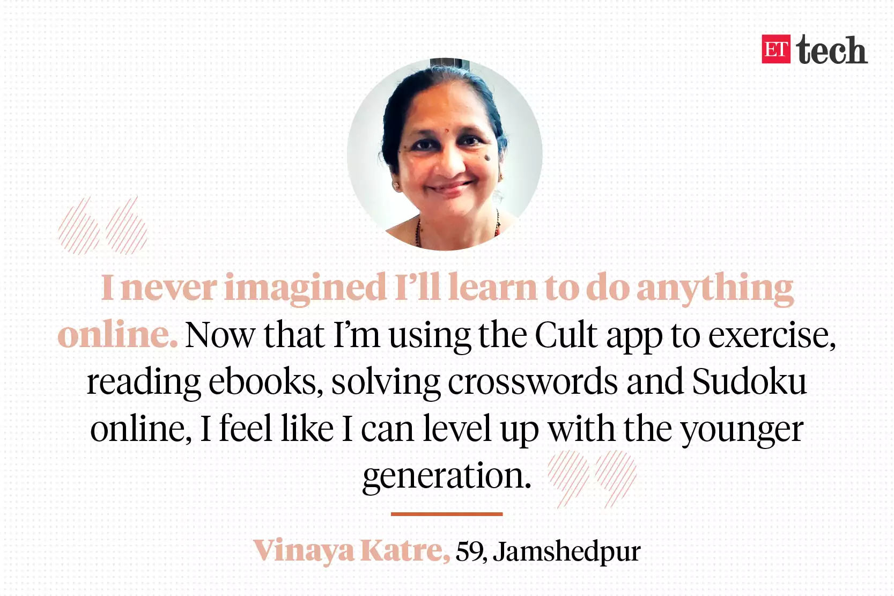
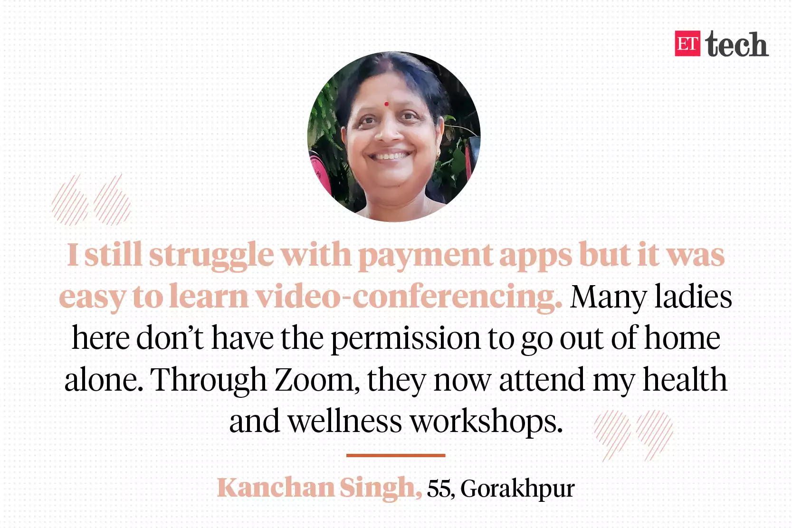
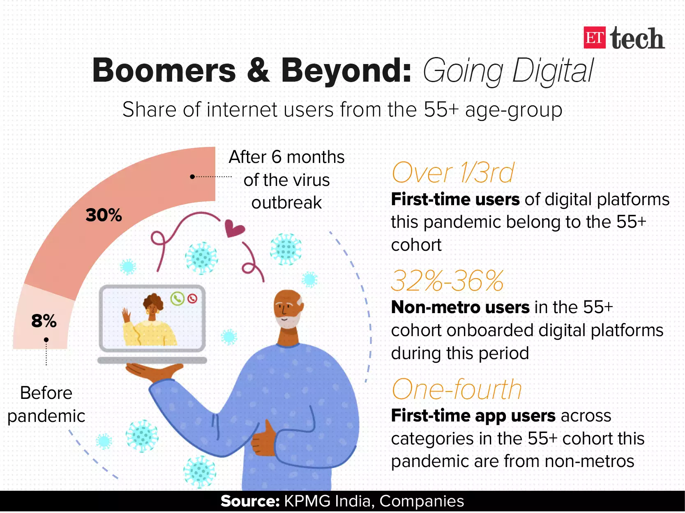
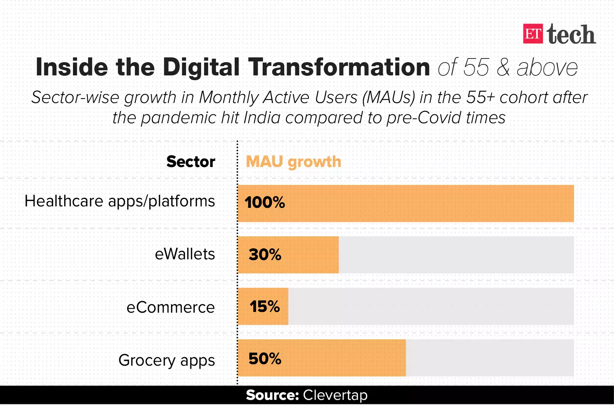
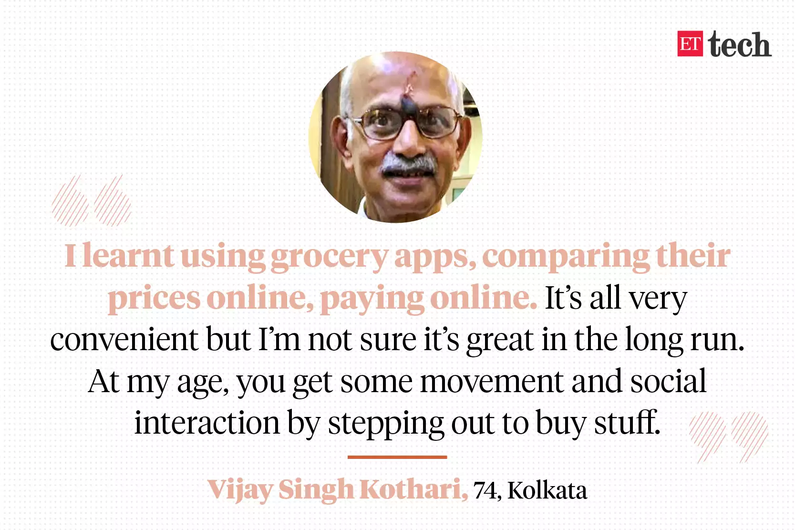

A lot has changed in the life of Vinaya Katre over the last six months.
Until the Covid-19 pandemic began spreading in March, the 59-year-old Jamshedpur-based schoolteacher had never imagined that she would have to learn to do anything “online” except perhaps chat through WhatsApp.
However, overwhelmed by an increased workload during the initial phases of the lockdown, Katre developed back pain and, on the advice of her Mumbai-based daughter, downloaded fitness training app Cult.fit to check out its online courses for the elderly.
That was only the beginning of Katre’s digital transformation.
Soon after, she learnt how to navigate Google Meet for videoconferencing, both professionally as well as for personal use. Now, she even reads e-books and solves crosswords and Sudoku online.
“I feel I can level up with the younger generation now,” says Katre who teaches geography for students of class 2 and 3.
Miles away, in the city of Gorakhpur in Uttar Pradesh, 55-year-old Kanchan Singh is learning how to organise webinars on Zoom with a little help from her daughter, who is back home from Delhi on maternity leave.
“Many ladies here don’t have permission to step out of home alone. Through Zoom, they now attend my health and wellness workshops," says Singh, a yoga teacher who is also learning spoken English via the Duolingo app.
The virus outbreak has inadvertently led to the digital migration of many like Katre and Singh, who belong to the 55-and-above age-group, roughly falling under the demographic cohort of the baby boomers and the silent generation.
The fear among senior citizens around stepping out to run errands during the pandemic has pushed many to let go of technology-related inhibitions and embrace digital platforms.
In Jaipur, Vijay Beri, in his early 60s, has learnt to make digital payments for everything from his LIC premium to the landline bill and the broadband service. “I don’t have to go to the bank now unless it is extremely important,” says Beri. “Life is smooth now,” he adds.
What the data says
Prior to the pandemic, the share of internet users in the 55-plus age group was only 6%-8%, says Feroz Khan, partner and head - digital advisory, at KPMG in India.
Within six months of the pandemic though, the data suggests that growth of digital users for the age bracket of 55+ is in the range of 25%-30% for various categories like communication, medicine, commerce, entertainment etc, adds Khan.
According to KPMG India’s estimates, over one-third of first-time users of several digital platforms during the pandemic belong to the 55+ cohort.

Healthcare, payment wallets, ecommerce and grocery are some of the categories to have seen a notable jump in monthly active users (MAUs) from the 55+ cohort during the past few months, according to data analysed by user retention and engagement platform CleverTap.
While the MAUs in the 55+ age-group have almost doubled for healthcare apps and platforms compared to pre-Covid-19 levels, grocery apps have seen at least a 50% jump in elderly MAUs.
Digital payment platforms witnessed a 30% hike in MAUs from this cohort, while ecommerce companies saw a 15% increase, as per data from CleverTap.
At Cult.fit, there has been a 150% growth in the adoption of its digital fitness sessions in this specific age category since April, says a spokesperson from parent company Cure.fit.
“At least 82% users in this age-group are first-time users,” the spokesperson adds.
Payment wallet app Paytm says it has seen 26% growth in overall users in the 55+ age-group during the pandemic.
For digital payments company PhonePe, at least half of its fresh users were “completely new to digital payments and are from an older age-group,” a spokesperson tells ET.
Besides taking to digital to perform essential tasks, this cohort has also caught on online gaming.
Vikash Jaiswal, founder of Gametion, the maker of gaming apps Ludo King, Carrom King and Sudoku, says that there has been a 58% spike in installs from the 55+ cohort between June and August, compared to the January-March period.
While the overall user base in this age-group remains in single-digit percentages, “there has been a 50+% growth in daily active users from this age-group when comparing the months of January to March with July to September,” he adds.

Saurabh Kumar, founder of online grocery retailer Grofers, says being “coerced by their children who live in different cities or introduced to activities like shopping etc online by close family and friends have also helped the trend.”
Grofers, for instance, has “at least 22% of all first-time users in this age-group” from non-metros, he says.
Over one-third of Cure.fit’s users in this category are first-time users from non-metros, the company spokesperson claims.
Roughly, about 32%-36% of non-metro users in this age-group have onboarded digital platforms during the pandemic, says Khan of KPMG India.
What users say
Conversations with multiple people in the elderly cohort revealed that most of them struggled to navigate payment apps while picking up how to operate videoconferencing and grocery apps rather quickly.
On its part, PhonePe says it “re-architectured the app overnight in March to make lockdown-related top use cases — like recharges, bill pay and money transfers, payment for grocery and medicine delivery apps — show upfront so that they are highly discoverable for all new users.”
But product analysts say there’s room to make the UI-UX of payment apps less complicated for first-time users in the 55-and-above age-group.
On digital payments, it is also essential to educate senior citizens around digital payment safety, says Rama Vedashree, CEO of Data Security Council of India, an initiative by IT industry lobby group Nasscom.
Vedashree also suggests ways in which this could be done.
“The education initiative would require segmenting this audience based on their current awareness levels of digital channels. The awareness campaign needs to target both rural and urban users who are all at varying levels of digital adoption.”
Their aspirations
Folks in the 55+ age-group across the country, with varying degree of comfort with digital platforms, have adapted to the ways of the internet world to save time, to ward off loneliness, to stay safe indoors, to start a business, or to just feel confident.
In Mumbai, Neelam Gangwal, 57, found someone from her circle who taught Gangwal’s Kuchaman community of 300 middle-aged women from Rajasthan how to operate basic apps on their smartphones, via Zoom sessions.
“All of us think when kids are in the house, why do we need to learn these things. One starts thinking the expensive phones are for mere showoff,” says Gangwal.v
In these sessions, the women were taught things like how to mute/unmute themselves during video-conferencing calls. They learnt how to change the language of typing for WhatsApp, how to send voice-notes.
We need to learn these things to be independent, says Gangwal. “When you lean out of your car’s window on a street to ask for an address, people think you’re illiterate because you don’t know how to read Google Maps. We don’t want to feel like that anymore.”
What they miss on digital
In Hyderabad, 62-year-old Venkat Rao Kocherlakota is trying to familiarise himself with all things digital for he is convinced the internet will guide the world. “It’s fascinating that you can fetch plumbers and technicians off an app now. But it takes away the opportunity to patronise your area’s local artisans known to you. On an app, you’re looking for someone unknown to serve your needs,” he says.
Kolkata’s Vijay Singh Kothari, 74, finds himself in a similar quandary.
“I learnt using grocery apps, comparing their prices online, paying online. It’s all very convenient but I’m not sure it’s great in the long run. At my age, you get some movement and social interaction by stepping out to buy stuff,” he says.
Role reversal
Be that as it may, children and grandchildren of people from this cohort are marvelling at the pace at which the elderly members of their family are upping their digital skills, often proudly talking about it on social media.
“In these last six months, I have been suitably impressed by how quickly my mother has picked up her skills in using apps like Urban Company, Fresh to Home, Zoom and WhatsApp calls, which have, in turn, made her life much easier,” said brand and communications consultant Moushumi Dutt, referring to her 80-year-old mother living in Delhi.
“Her digital IQ was at 5 before the pandemic. Now, it’s an 8 on 10,” Dutt says.
It is almost like a role reversal, from parents celebrating their children’s first footsteps to the offspring lauding their digital progression now.
(Illustration and graphics by Rahul Awasthi)